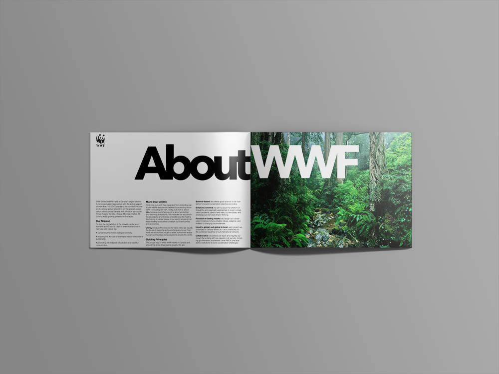
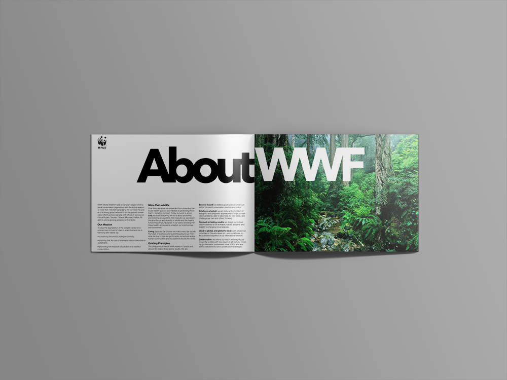

WWF Booklet
 

I chose to use this in my portfolio because I really like using images as the main focus of my designs, especially if I’m designing a brochure or something with several pictures. This gives the user an idea of how I would use pictures in a brochure or booklet. I also want to portray my use of typography in the booklet.